Version 1.1 (2024)
University of Twente, University of Leeds, RHEA System S.p.A., AGH University of Krakow
Introduction 2
Main contributors 2
Installation 2
Definition of SAR benchmark datasets and data sources 5
SAR signatures 5
Useful data sources 6
Procedure description 7
Use case: Case in the Netherlands 7
Creation of SAR signatures: Category-3 12
Radarcoding concept 12
Geospatial data TOP10NL collection and coversion 15
SAR signature extraction demonstration 21
Machine learning scripts for LULC classification 27
A Doris installation, implementation and trouble shooting 30
B Denoising example 36
Study area for Use case 1: Groningen, The Netherlands 8
List of Sentinel-1 SLC data used 8
Multi-temporal filter example 9
Procedure of extracting geocoded SAR signature 15
pdok website showing where to download TOP10NL 16
TOP10NL imported onto QGIS 17
Overview of the radarcoding script files 18
Overview of radarcoding inputcard 19
Overview of radarcoding intermediate output 19
Overview of SNAP’s output ’.dim’ file demonstration 20
Overview of Doris preprocessed output 21
Output from Doris-based interferogram generation in a slave ’date’ folder . 22
Global attributes example of NetCDF data format 24
Local attributes example of NetCDF data format 25
Global attributes in Python file 25
Local attributes in Python file 25
Parameters that are to be changed in ‘singnatureextraction.py‘ 27
This document provides a tutorial of using AlignsAR package to create SAR benchmark datasets, and describes the concepts of some relevant methods. This document is complied by Ling Chang.
This package is accomplished by all AlignSAR members, including e.g. Xu Zhang, Anurag Kulshrestha, Serkan Girgin, Alfred Stein, Ling Chang, Jos´e Manuel Delgado Blasco, Angie Catalina Carrillo Chappe, Andrea Cavallini, Marco Uccelli, Andy Hooper, Milan Lazecky, Wojciech Witkowski, Magdalena L- ucka, Artur Guzy. The main contributors for script development and related description are Anurag Kulshrestha, Xu Zhang, Jos´e Manuel Delgado Blasco, Angie Catalina Carrillo Chappe, Milan Lazecky, Serkan Girgin, and Ling Chang.
All scripts for the AlignSAR package can be found on the GitHub web page: https://github.com/AlignSAR/alignSAR.
The user can directly download them to a local computer, using e.g. git clone
https://github.com/AlignSAR/alignSAR in the terminal.
SAR data preprocessing requires using either ESA SNAP or Doris-5. The user can either use Docker with our provided Docker file, or download SNAP via ESA SNAP, and Doris-5 via GitHub AlignSAR and manually install them on the computer. Note that the version of Doris-5 on GitHub AlignSAR, namely itc-doris 5
5 patch2023, is an updated version upon GitHub TUD-Doris, and if the user uses Doris-5 via GitHub TUD-Doris, the trouble shooting when installing it is included in Appendix A.
patch2023, is an updated version upon GitHub TUD-Doris, and if the user uses Doris-5 via GitHub TUD-Doris, the trouble shooting when installing it is included in Appendix A.
By creating a Docker that contains the pre-installed necessary software tools, i.e. SNAP 9.0, Doris and a Python 3 environment and other customised scripts, the end users can directly follow the procedure to create SAR benchmark datasets without installing the required software tools by the end users.
The instruction of Docker software installation on e.g. Ubuntu refers to dokcer-docs, and DigitalOcean.
To build the AlignSAR docker image, a user should install docker and download Dock- erfile provided in the github repository (https://github.com/AlignSAR/alignSAR) to a dedicated directory. Inside the directory, the user can build the image using:
docker build -t alignsar .
and test the image by running an interactive terminal session using:
docker run -it alignsar
Note that one needs to run these commands in terminal, and in the same folder as the ’docker’ file stored. Here ’alignsar’ is to be mounted, and can be customized by the enduser. To unmount ’alignsar’ one can directly close the terminal.
As we have stated, interferometric functionality is provided by both SNAP and Doris software. While SNAP is installed in the Docker image, several manual steps must be performed in order to install Doris 5 (which is called by Python 2). For this, please follow the instructions in Appendix A. Another solution is to use another DockerFile stored in the folder ’itc-doris 5
5 patch2023’ with the same name DockerFile. This DockerFile can automatically install Doris-5 and its relevant third-party software tools. To compile this
patch2023’ with the same name DockerFile. This DockerFile can automatically install Doris-5 and its relevant third-party software tools. To compile this
DockFile, in the terminal under path ’/home/docker’, run the command
sudo docker build -t alignsar .
Then to run the docker image, run the command
sudo docker run -it -v /your local
local path:/path
path:/path you
you want
want set
set in
in docker alignsar
docker alignsar
which can open a docker interface. Here the keyword ’-it’ is to run the docker image using interface mode in the terminal, while ’-v’ is to mount the local disk to docker. Afterwards, the Doris-5 installation directory should be modified by editing files
/root/DorisITCupdate/doris/doris stack/main
stack/main code/doris
code/doris main.py (Line 5) and
main.py (Line 5) and
/root/DorisITCupdate/doris/install/doris config.xml (Line 2). Specifically, Line 5: ’sys.path.append(’/home/username/software/’)’ should be changed to
config.xml (Line 2). Specifically, Line 5: ’sys.path.append(’/home/username/software/’)’ should be changed to
’sys.path.append(’/root/Doris5ITCupdate/’)’
and Line 2: change to ’<source path>/root/Doris5ITCupdate/doris</source
path>/root/Doris5ITCupdate/doris</source path>’.
path>’.
Category 1:
Single polarimetric signatures, like amplitude, intensity, backscatter coefficient, (in- terferometric) phase and coherence.
Category 2:
Multi polarimetric signatures, such as co-, dual polarization cross product, and sum- mation, difference and ratio of the co-, dual, quad polarization intensities, and en- tropy, scattering mechanisms, SAR vegetation index (RVI), and SAR soil moisture.
Category 3:
Inherited attributes from additional geospatial observations, e.g. land use land cover type, cadastral features, temperature, atmospheric phase, and geological informa- tion.
Based on the quality level, we extract the pixel with high quality, namely SAR bench- mark dataset (SARbd) [4]. We provide SARbd in radar coordinates (as intermediate products), and SARbd in geo coordinates. We categorize SARbd into three different lev- els in terms of the quality level of SARbd. Level 1, namely SARbd-L1, is merely based on SAR statistics; Level 2, namely SARbd-L2, is based on external geospatial reference data; and Level 3, namely SARbd-L3, is based on both SAR statistics and external geospatial reference data.
Many SAR data and other geospatial (reference) data can be collected freely, for instance,
Sentinel-1a&b SAR data can be downloaded from ASFvertex and scihub
ERS and Envisat can be downloaed via eogateway
GPS dataset is stored in surfdrive. More GPS observations can be found on NGLSta- tion
AHN (actual height of Netherlands) can be collected via pdok
Topographic map (TOPNL) can be found on brt
SRTM can be downloaded via earthexplorer
Copernicus DEM can be downloaded via panda
DTM (Digital Terrain Model of Poland) can be downloaded via DTMPoland
Land Cover Map - HRL - High Resolution Layers can be found via POLSA
Geological data – Boreholes and Mining areas are stored on dmpgi and more detailed information for boreholes can be found via pgi
We have three use cases, one in the Netherlands, one in Poland and one in India. Here we take the first use case in the Netherlands as a demo. The site is in the northern part of the country in the vicinity of the Groningen gas field and the Wadden Sea, see Fig. 3.1. This region is active due to both human activities like oil/gas extraction and geo-processes like wetland dynamics. The Groningen region is affected by land subsidence and earthquakes, due to human activity.
Seven C-band Sentinel-1A acquisitions (Path 15, Frame 169) in ascending orbit were collected. They have VV and VH polarization channels, and were acquired separately on 09 Jan, 21 Jan, 02 Feb, 14 Feb, 26 Feb, 10 Mar and 22 Mar 2022. The python script to automatically download these acquisitions is attached in DownloadCode, see data list in Fig. 3.2. The area of interest is outlined by purple in Fig. 3.1, and its shape file can be obtained via aoi. The orbital data can be collected from POEORB.
For instance, using a denoising method, multi-temporal filtering (Eq. (B.1)) on these 7 Sentinel-1 amplitude images in VV, the speckle noise can be reduced, see Fig. 3.3. The zoomed-in images (line 200 − 400, pixel 2000 − 2200) for the original and filtered SAR images are indicated in red and green separately. The spatial window size was set to 3 × 3 for this example.
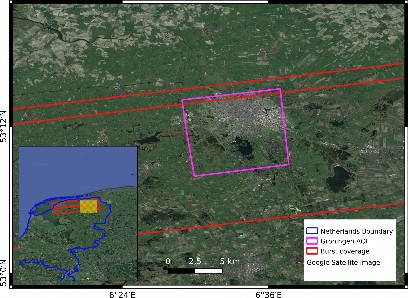
Figure 3.1: Study area for Use case 1: Groningen, The Netherlands. The city is shown within the pink polygon and corresponds to the amplitude image in Fig. 3.3. The yellow area in the inset map shows the overview of the outer map.
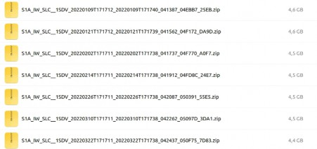
Figure 3.2: List of Sentinel-1 SLC data used
To generate Category-1 and -2 SAR signatures, Doris-5 is used. Here we show some basic procedures and parameter configuration. After Doris-5 installation (e.g. in the folder of
/software/doris/), downloading the seven Sentinel-1 SAR images via DownloadCode, and the corresponding orbital data via Sentinel-1OrbitatASF, save Sentinel-1 SAR data and
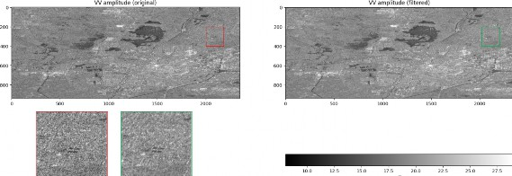
Figure 3.3: Multi-temporal filter example
its orbital data in separate folders. Next go to /software/doris/prepare stack, and run the python scripts: python2 prepare
stack, and run the python scripts: python2 prepare datastack
datastack main.py. This script will ask to define the different folders that were created before. Here is an example:
main.py. This script will ask to define the different folders that were created before. Here is an example:
Enter the path to the archive data folder: /home/ling/d2/groningendata Which polarisation do you want to use (vv,hh,vh,hv): vv
Which SAR data track/path do you want to work with? (explore on https://scihub.copernicus.eu/dhus/)
: 15
Is this track ascending or descending? (asc/dsc) : asc
Enter the path to the folder of new datastack: /home/ling/d2/groningen/process Enter full path to the shapefile: /home/ling/d2/groningen/aoi/gro aoi.shp
aoi.shp
Enter the path to the folder of the orbit files: /home/ling/d2/groningen orbit Do you want to generate the DEM file automatically (Yes/No): Yes
orbit Do you want to generate the DEM file automatically (Yes/No): Yes
Enter path to the dem folder: /home/ling/d2/groningen/DEM Do you want to use parallel computing (Yes/No): Yes
How many cores do you want to use: 2
What is the start date of your stack in yyyy-mm-dd (can be changed later): 2022-01-09 What is the end date of your stack in yyyy-mm-dd (can be changed later): 2022-03-22 What is the master date of your stack in yyyy-mm-dd (can be changed later): 2022-
02-14
Note that https://scihub.copernicus.eu/dhus/ has been replaced by
https://dataspace.copernicus.eu. After providing answers to these questions, the DEM will be automatically downloaded, and the terminal will show the processing status, like
https://e4ftl01.cr.usgs.gov/MEASURES/SRTMGL1.003/2000.02.11/SRTMGL1 page
page 1.html status200 received ok
1.html status200 received ok
https://e4ftl01.cr.usgs.gov/MEASURES/SRTMGL1.003/2000.02.11/SRTMGL1 page2.html status200 received ok
page2.html status200 received ok
https://e4ftl01.cr.usgs.gov/MEASURES/SRTMGL1.003/2000.02.11/SRTMGL1 page
page 3.html status200 received ok
3.html status200 received ok
https://e4ftl01.cr.usgs.gov/MEASURES/SRTMGL1.003/2000.02.11/SRTMGL1 page
page 4.html status200 received ok
4.html status200 received ok
https://e4ftl01.cr.usgs.gov/MEASURES/SRTMGL1.003/2000.02.11/SRTMGL1 page
page 5.html status200 received ok
5.html status200 received ok
https://e4ftl01.cr.usgs.gov/MEASURES/SRTMGL1.003/2000.02.11/SRTMGL1 page
page 6.html status200 received ok
6.html status200 received ok
https://e4ftl01.cr.usgs.gov/MEASURES/SRTMGL3.003/2000.02.11/ status200 received
ok
https://e4ftl01.cr.usgs.gov/MEASURES/SRTMGL30.002/2000.02.11/ status200 received
ok
([], [], [])
Bounding box is:
from 51.6 latitude to 54.800000000000004
from 4.9 longitude to 8.200000000000001
total file size is 3841 in latitude and 3961 in longitude total file size is 3841 in latitude and 3961 in longitude Save data to geotiff
Calculate geoid correction for SRTM data Correct DEM for geoid
–2023-10-01 15:06:06– https://github.com/anurag-kulshrestha/geoinformatics/raw/master/ WW15MGH.DAC
Resolving github.com (github.com)... 140.82.121.3
Connecting to github.com (github.com)—140.82.121.3—:443... connected.
HTTP request sent, awaiting response... 302 Found Location: https://raw.githubusercontent.com/anura kulshrestha/geoinformatics/master/ WW15MGH.DAC [following]
–2023-10-01 15:06:07– https://raw.githubusercontent.com/anurag-kulshrestha/geoinformatics/master/ WW15MGH.DAC
Resolving raw.githubusercontent.com (raw.githubusercontent.com)... 2606:50c0:8001::154, 2606:50c0:8003::154, 2606:50c0:8002::154, ... Connecting to raw.githubusercontent.com (raw.githubusercontent.com)—2606:50c0:8001::154—:443... connected. HTTP request sent, awaiting response... 200 OK Length: 2076480 (2,0M) [application/octet-stream] Saving to: ‘/home/ling/d2/groningen/DEM/EGM96 15min.dat’
15min.dat’
/home/ling/d2/groning 100
2023-10-01 15:06:07 (58,9 MB/s) - ‘/home/ling/d2/groningen/DEM/EGM96 15min.dat’ saved [2076480/2076480]
15min.dat’ saved [2076480/2076480]
0 .. 10 .. 20 .. 30 .. 40 .. 50 .. 60 .. 70 .. 80 .. 90 .. 100 - Done Input file size is 3961,
3841 0...10...20...30...40...50...60...70...80. 90...100 - done.
The stack folder will be created in /home/ling/d2/groningen/process, containing cre- ate dem.sh, dem doris
dem.sh, dem doris input.xml, doris
input.xml, doris stack.sh, download
stack.sh, download sentinel.sh, input
sentinel.sh, input files, and stack. The ’dem’ folder includes dem.raw, dem.raw.doris
files, and stack. The ’dem’ folder includes dem.raw, dem.raw.doris inputfile, dem.raw.q, dem.raw.var, and dem.tiff (SRTM1 for this case). The ’stack’ folder is empty for the time being. One can still modify ’doris
inputfile, dem.raw.q, dem.raw.var, and dem.tiff (SRTM1 for this case). The ’stack’ folder is empty for the time being. One can still modify ’doris input.xml’ to decide to run/cancel any processing steps by defining ’Yes’ or ’No’. For instance, if one doesn’t want to run coherence processing, in the ’doris
input.xml’ to decide to run/cancel any processing steps by defining ’Yes’ or ’No’. For instance, if one doesn’t want to run coherence processing, in the ’doris input.xml’ file, one can define <do
input.xml’ file, one can define <do coherence>No</do
coherence>No</do coherence>. After the ’doris
coherence>. After the ’doris input.xml’ modification, run the command bash doris
input.xml’ modification, run the command bash doris stack.sh.
stack.sh.
To showcase the extracted SAR signatures, a demo ’signature extraction
extraction demo.ipynb’ on Juypter notebook is created, as well as an illustration shown in Fig. 3.4. The python
demo.ipynb’ on Juypter notebook is created, as well as an illustration shown in Fig. 3.4. The python
script, namely ’Jupyter input
input preapre.py’ can be used to convert e.g. .raw data to .npy file that can be directly and interactively processed on jupyter notebook.
preapre.py’ can be used to convert e.g. .raw data to .npy file that can be directly and interactively processed on jupyter notebook.
To create Category-3 SAR signature, Radarcoding shall be implemented for the additional geospatial data.
Radarcoding is a step to convert all available data to radar coordinates, and link radar scatterers in SAR images with the counterparts in the reference datasets registered in geographic coordinate systems. Radarcoding is used to associate Category-3 signatures to radar scatterers. The Radarcoding script, namely rdrCode main.py is python based [2].
main.py is python based [2].
The Radarcoding procedure is illustrated in Fig. 3.5. A stack of SAR images (≥ 2) is
used and coregistered, resampled and aligned to the common master grids using differential SAR Interferometry (DInSAR). The mid-line number, PRF (pulse repetition frequency), RSR (range sampling frequency), first-line timing and first-pixel timing information are taken from the SAR image metadata. The SAR coverage boundary is extracted using the extreme extent coordinates from the satellite image metadata.
The additional reference observations may contain point-line-polygons, like topographic maps including land use land cover clarification product. For such observations, we ras- terize them class-wise using the GDAL rasterize function. Here, the choice of the raster image resolution is dependent upon the size of reference polygons, the spatial resolution of the SAR data and the processing limitations of the computer. If the reference datasets are available as rasters, e.g. optical images, Generic Atmospheric Correction Online Service for InSAR (GACOS) atmospheric phase delay maps [7], the datasets can be used directly for radarcoding. They can be optionally resampled to a required spatial resolution, especially for datasets with ultra-fine resolutions.
Rasterized reference data are then cropped, based on SAR coverage boundary informa-
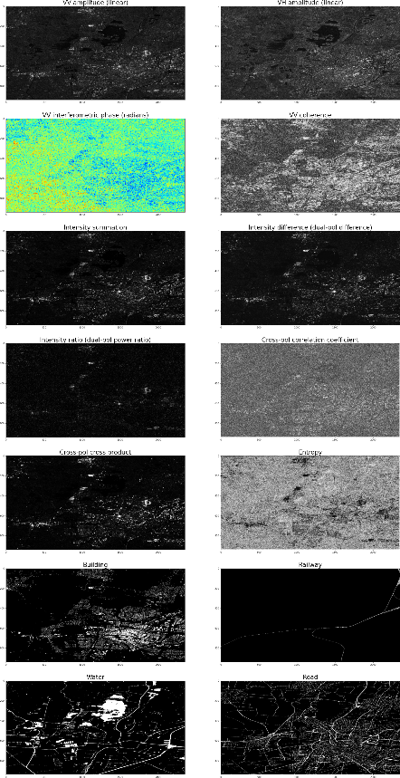
Figure 3.4: 14 SAR signatures for the acquisition on 09 Jan 2022
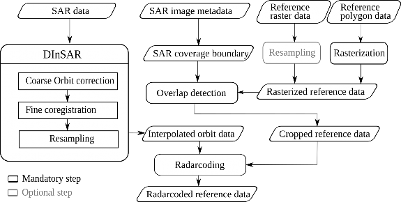
Figure 3.5: Radarcoding procedure [2]
tion, and later radar coordinates are assigned (with range and azimuth indices), namely radarcoded reference data.
To run Rdr-Code, the user needs to define the name of the file that needs to be radarcoded. If it is a multilayered file, i.e. with multiple bands in raster data, or multiple layers in vector, then the name of layers needs to be mentioned.
The alternative option for radarcoding is a function called snap rdrcode.py, allowing radarcoding from data prepared by SNAP and developed based on GMTSAR radarcoding routines.
rdrcode.py, allowing radarcoding from data prepared by SNAP and developed based on GMTSAR radarcoding routines.
In the end, all SAR signatures can be directly converted to a geographic (e.g. WGS-84) coordinate system using Doris-5 (when setting ’<do calc
calc coordinates>Yes</do
coordinates>Yes</do calc
calc coordinates>’ in ’doris
coordinates>’ in ’doris input.xml’) or geocoding tables generated by SNAP, see Fig. 3.6. For the later
input.xml’) or geocoding tables generated by SNAP, see Fig. 3.6. For the later
option, we generate geocoding look-up tables based on the reference acquisition that will be later used to transform signatures generated in radar coordinates from this and other precisely coregistered acquisitions in the data stack.
The geocoding script geocode ifg
ifg snap.sh calls a SNAP processing graph file
snap.sh calls a SNAP processing graph file
graph geocoding
geocoding s1
s1 geotiff.xml that contains two operations: Multilooking and Terrain Correction (using Copernicus DEM automatically downloaded by SNAP) leading
geotiff.xml that contains two operations: Multilooking and Terrain Correction (using Copernicus DEM automatically downloaded by SNAP) leading
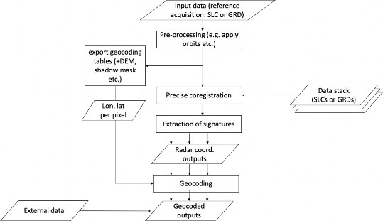
Figure 3.6: Procedure of extracting geocoded SAR signature
to geocoding the data to a 0.00027 deg (30 m) resolution GeoTIFF grid in the WGS-84 system that can be further converted to another coordinate system (e.g. UTM).
Usage:
geocode ifg
ifg snap.sh XX.dim /output/path [bandname]
snap.sh XX.dim /output/path [bandname]
Note if bandname is not provided, the script would geocode all bands found inside the SNAP dim file structure.
We take the geographic base map TOP10NL data as an example, obtained through https://service.pdok.nl/brt/topnl/atom/top10nl.xml, see Fig. 3.7. For TOP10NL Geopackage block, three versions of TOP10NL data are included which were updated in different years. Here, we select the 2022 version ‘top10nlCompleet − 2022.gpkg‘, which aligns with the SAR dataset.
The TOP10NL data in ‘gpkg‘ format can be viewed by using QGIS. When importing the TOP10NL data into the QGIS, a pop-up window shows all the attribute layers as
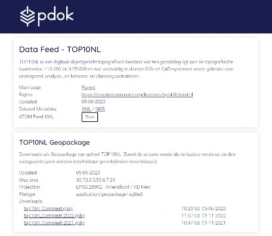
Figure 3.7: pdok website showing where to download TOP10NL
shown in Fig. 3.8. Here, ‘top10nl gebouw
gebouw vlak‘ (buildings), ‘top10nl
vlak‘ (buildings), ‘top10nl spoorbaandeel
spoorbaandeel lijn‘ (railways), ‘top10nl
lijn‘ (railways), ‘top10nl waterdeel
waterdeel vlak‘ (water bodies), ‘top10nl
vlak‘ (water bodies), ‘top10nl wegdeel
wegdeel vlak‘ (roads) are se- lected to obtain additional SAR signatures by radarcoding, which are highlighted in blue (Fig. 3.8), and later visualized by QGIS as the screenshot illustrated in Fig. 3.9.
vlak‘ (roads) are se- lected to obtain additional SAR signatures by radarcoding, which are highlighted in blue (Fig. 3.8), and later visualized by QGIS as the screenshot illustrated in Fig. 3.9.
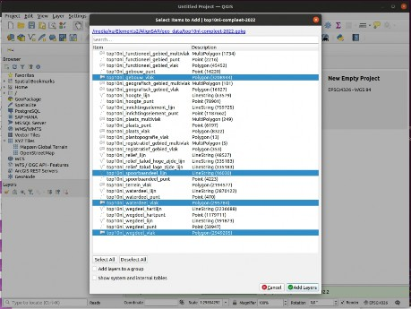
Figure 3.8: TOP10NL imported onto QGIS
The radarcoding scripts can be found via ‘AlignSAR/alignSAR/rdrcode‘ on Github, as shown in Fig. 3.10. The user only needs to set the parameters in ‘Input card.txt‘ file as shown in Fig. 3.11. In Line 8, the project ID can be defined. From Line 14 to Line 21, these parameters are part of the parameters in Doris preprocessing. Note that in Line 17, for ’SensorName’, the user can keep it as e.g. ’s1’, if older SAR data are used like from Envisat. Such setting will not affect the radarcoding result. From Line 27 to Line 32, these parameters are prepared for the TOP10NL data for radarcoding. Line 27 is the TOP10NL data downloaded from PDOK. Line 28 can set the value to ‘True‘ or ‘False‘ to either crop the datasets or not. Line 29 is the data type of the reference data. The data can be in polygon or raster format. Line 30 shows the layer name that we want to extract from the reference data. The ‘resolution‘ in Line 31 is suggested to be larger than
card.txt‘ file as shown in Fig. 3.11. In Line 8, the project ID can be defined. From Line 14 to Line 21, these parameters are part of the parameters in Doris preprocessing. Note that in Line 17, for ’SensorName’, the user can keep it as e.g. ’s1’, if older SAR data are used like from Envisat. Such setting will not affect the radarcoding result. From Line 27 to Line 32, these parameters are prepared for the TOP10NL data for radarcoding. Line 27 is the TOP10NL data downloaded from PDOK. Line 28 can set the value to ‘True‘ or ‘False‘ to either crop the datasets or not. Line 29 is the data type of the reference data. The data can be in polygon or raster format. Line 30 shows the layer name that we want to extract from the reference data. The ‘resolution‘ in Line 31 is suggested to be larger than
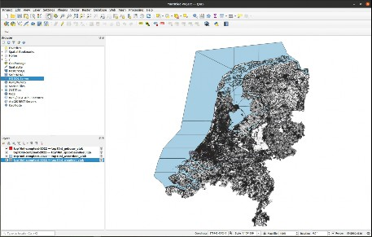
Figure 3.9: Overview of the four selected TOP10NL layers on QGIS
0.0001 decimal degrees. The ‘burn val‘ in Line 32 is the space distance used to separate the adjacent layers. Line 38 can set the intermediate folder path to store the intermediate radarcoding products as shown in Fig. 3.12. Line 39 is prepared for the interferogram generation. To select their option or not, the user can set ‘True‘ or ‘False.‘
val‘ in Line 32 is the space distance used to separate the adjacent layers. Line 38 can set the intermediate folder path to store the intermediate radarcoding products as shown in Fig. 3.12. Line 39 is prepared for the interferogram generation. To select their option or not, the user can set ‘True‘ or ‘False.‘
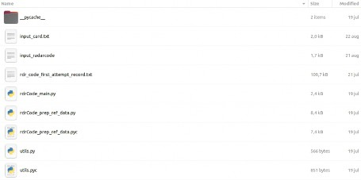
Figure 3.10: Overview of the radarcoding script files
After this parameter setup, the user can open the terminal and go to the folder where the ‘python rdrCode main.py‘ file exists. Then, run ‘python rdrCode
main.py‘ file exists. Then, run ‘python rdrCode main.py
main.py
--inputFile input card.txt‘, the radarcoding process will run automatically. Finally,
card.txt‘, the radarcoding process will run automatically. Finally,
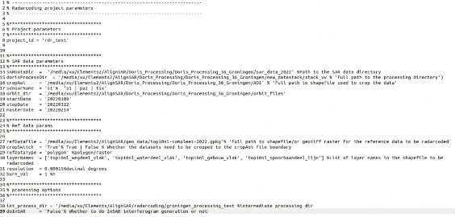
Figure 3.11: Overview of radarcoding inputcard
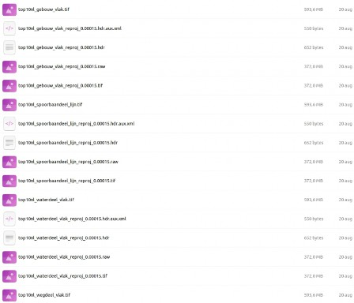
Figure 3.12: Overview of radarcoding intermediate output
the radarcoding products, e.g., ‘top10nl gebouw
gebouw vlak
vlak radarcoded.raw‘ can be found in the master image folder (../new
radarcoded.raw‘ can be found in the master image folder (../new datastack/stack
datastack/stack vv/20220214). Note that in the in- put
vv/20220214). Note that in the in- put radarcode, on line 10 the default setting ‘Height = 0.0 // average WGS84 height’ is not used for radarcoding. This parameter HEIGHT (if specified) is only used for the image cropping calculation of the crop, using geo-coordinates information.
radarcode, on line 10 the default setting ‘Height = 0.0 // average WGS84 height’ is not used for radarcoding. This parameter HEIGHT (if specified) is only used for the image cropping calculation of the crop, using geo-coordinates information.
Alternatively, radarcoding of a GeoTIFF file in WGS-84 can be performed using func- tions from snap rdrcode.py based on the outputs from SNAP containing orthorectified coordinates per pixel (e.g. outputs of SNAP2STAMPS) (function snap
rdrcode.py based on the outputs from SNAP containing orthorectified coordinates per pixel (e.g. outputs of SNAP2STAMPS) (function snap geo2rdc), or cor- responding outputs e.g. by the GEOCODE step of doris (function geo2rdc).
geo2rdc), or cor- responding outputs e.g. by the GEOCODE step of doris (function geo2rdc).
A demonstration is shown below to illustrate how radarcoding works using SNAP. First of all, the SNAP radarcoding script can be downloaded in alignSAR Github (https:// github.com/AlignSAR/alignSAR/blob/main/rdrcode/snap rdrcode.py). Besides, ’bin’ and ’snap
rdrcode.py). Besides, ’bin’ and ’snap graphs’ folders should be downloaded to the local computer. They are pre- pared for script installation. There are two required inputs: one is the preprocessed .dim file generated by using SNAP, as shown in Fig. 3.13. The ’orthorectifiedLat’ and ’or- thorectifiedLon’ must be provided for the input; the other one is the image that needs to be radarcoded. Finally, following the scripts in ’snap
graphs’ folders should be downloaded to the local computer. They are pre- pared for script installation. There are two required inputs: one is the preprocessed .dim file generated by using SNAP, as shown in Fig. 3.13. The ’orthorectifiedLat’ and ’or- thorectifiedLon’ must be provided for the input; the other one is the image that needs to be radarcoded. Finally, following the scripts in ’snap radarcode.py’, from Line 7 to 25, radarcoding can be done using jupyter notebook.
radarcode.py’, from Line 7 to 25, radarcoding can be done using jupyter notebook.
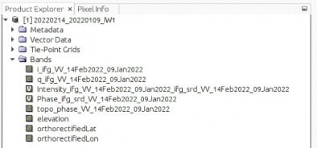
Figure 3.13: Overview of SNAP’s output ’.dim’ file demonstration
As we have done in Sec. 3.1.1, to obtain SAR benchmark datesets first in radar coordinates (ultimately in geo-coordinates) using Doris, we apply a standard interferogram generation procedure using Doris for these seven Sentinel-1 SAR images in VV and VH. All coregis- tered images can be found on https://alignsar.stargazer-cod.ts.net/ITC data
data
/demo data.zip. The standard output of these coregistered images covers the folders
data.zip. The standard output of these coregistered images covers the folders
listed in Fig. 3.14, and in each ’date’ folder, it has raw images (.raw) and their preview images in .ras and log/dumpy files, see Fig. 3.15. For instance, ‘cint srd.raw‘ is the re- sultant interferogram after removing reference and topographic phase, ‘coherence.raw‘ is the coherence maps, and ‘slave
srd.raw‘ is the re- sultant interferogram after removing reference and topographic phase, ‘coherence.raw‘ is the coherence maps, and ‘slave rsmp.raw‘ is the coregistered and resampled slave image. Note that there are no ‘cint
rsmp.raw‘ is the coregistered and resampled slave image. Note that there are no ‘cint srd.raw‘ and ‘coherence.raw‘ for the master ’date folder’ – ‘20220214‘.
srd.raw‘ and ‘coherence.raw‘ for the master ’date folder’ – ‘20220214‘.
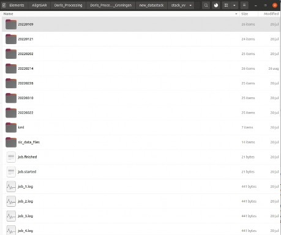
Figure 3.14: Overview of Doris preprocessed output The SAR signatures contain:
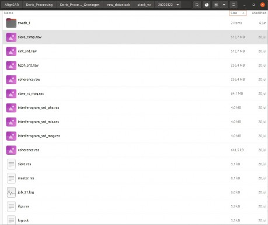
Figure 3.15: Output from Doris-based interferogram generation in a slave ’date’ folder
VV amplitude (linear),
VH amplitude (linear),
VV interferometric phase [in radians],
VV coherence,
Intensity summation |SV V |2 + |SV H|2, (SV V and SV H represent complex number in VV and VH)
Intensity difference (dual-pol difference) |SV V |2 − |SV H|2,
Intensity ratio (dual-pol power ratio) |SV V |2/|SV H|2,
cross-pol correlation coefficient,
cross-pol cross product,
entropy,
buildings (TOP10NL),
roads (TOP10NL),
water (TOP10NL),
railways (TOP10NL).
These SAR signatures are extracted and calculated based on ’cint srd.raw’, ’coher- ence.raw’, and ’slave
srd.raw’, ’coher- ence.raw’, and ’slave rsmp.raw’. A NetCDF data format is prepared to contain the signa- tures along with their global and local attributes. Particularly, global and local attributes are defined separately as shown in Table 3.1 and Table 3.2. The global attributes describe the basic information for all the signatures. For instance, ’sardatetime’ describes the acquisition time of the current SLC image where all signatures are extracted, as shown in Fig. 3.16. The local attributes belong to the signatures that are stored in ’variables’ as shown in Fig. 3.17. As an example, ’VV interferometric phase’, its local attributes: unit is radians, the format is float32, the range is between (−π, π], and description is the phase difference between master and slave acquisition.
rsmp.raw’. A NetCDF data format is prepared to contain the signa- tures along with their global and local attributes. Particularly, global and local attributes are defined separately as shown in Table 3.1 and Table 3.2. The global attributes describe the basic information for all the signatures. For instance, ’sardatetime’ describes the acquisition time of the current SLC image where all signatures are extracted, as shown in Fig. 3.16. The local attributes belong to the signatures that are stored in ’variables’ as shown in Fig. 3.17. As an example, ’VV interferometric phase’, its local attributes: unit is radians, the format is float32, the range is between (−π, π], and description is the phase difference between master and slave acquisition.
To build up the NetCDF data format with global and local attributes, the user should first give the path of the unzipped raw SLC folder to parameter ’sar folder
folder path’ in ’signa- ture
path’ in ’signa- ture extraction.py’ Line 311, e.g., ’sar
extraction.py’ Line 311, e.g., ’sar folder
folder path = /(your doris processing path)/Doris
path = /(your doris processing path)/Doris
Processing 36
36 Groningen/sar
Groningen/sar data
data 2022/’. The next folder level should contain 7 raw SLC folders. Then, in the ’Meta
2022/’. The next folder level should contain 7 raw SLC folders. Then, in the ’Meta info
info extraction
extraction global
global local.py’ file, the user can define the global attributes themselves from Line 61 to 69. The attributes before ’sar
local.py’ file, the user can define the global attributes themselves from Line 61 to 69. The attributes before ’sar date
date time’ can be added or deleted manually, while the later attributes will be extracted from ’xml’ files of unzipped raw SLC folder automatically, as shown in Fig. 3.18. Lines 80 to 198 have prepared local attributes for 14 signatures. The local attributes for each signature, e.g., ’VV
time’ can be added or deleted manually, while the later attributes will be extracted from ’xml’ files of unzipped raw SLC folder automatically, as shown in Fig. 3.18. Lines 80 to 198 have prepared local attributes for 14 signatures. The local attributes for each signature, e.g., ’VV amplitude
amplitude attr’, are defined in a dictionary format with keywords and their values,
attr’, are defined in a dictionary format with keywords and their values,
e.g., keywords ’Format’ and its value ’float32”, as shown in Fig. 3.19. The user is free to add or delete the keywords and values.
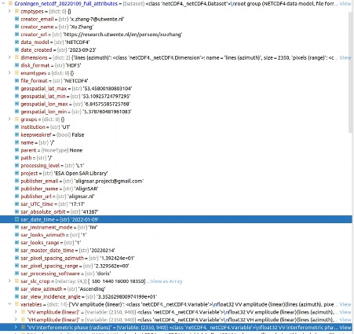
Figure 3.16: Global attributes example of NetCDF data format
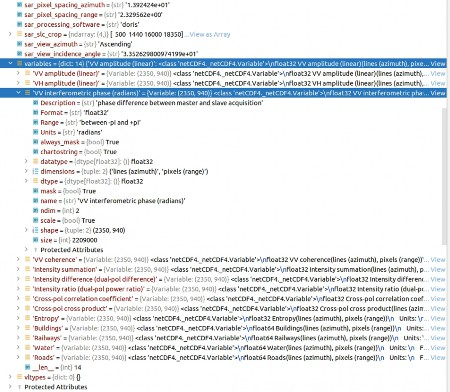
Figure 3.17: Local attributes example of NetCDF data format
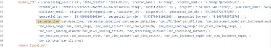
Figure 3.18: Global attributes in Python file
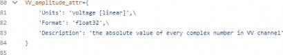
Figure 3.19: Local attributes in Python file
Having the global and local attributes prepared, we continue with the signatures. In ‘signature extraction.py‘ (Fig. 3.20), Lines 249 and 250 should be given the paths to the VV and VH preprocessed folder, e.g., ‘(your data folder)/new
extraction.py‘ (Fig. 3.20), Lines 249 and 250 should be given the paths to the VV and VH preprocessed folder, e.g., ‘(your data folder)/new data
data
stack/stack vv/.‘ It is similar to the VH mode in Line 250. In Line 252, the user should set the master date to avoid reading master coherence or interferogram maps. In Line 253, the user can choose whether to crop the images. If setting ‘True‘ in the following Line 254, the user can define the crop region. The parameters of ‘CRP
vv/.‘ It is similar to the VH mode in Line 250. In Line 252, the user should set the master date to avoid reading master coherence or interferogram maps. In Line 253, the user can choose whether to crop the images. If setting ‘True‘ in the following Line 254, the user can define the crop region. The parameters of ‘CRP LIST‘ are the first line, last line, first pixel, and last pixel, assuming the coordinate starts from the top left. Line 255 shows the maximum number of SAR images. Line 257 indicates the type of reading maps. Three map types are defined here: ‘cpx‘ represents complex SAR images, ‘ifg‘ means interferogram, and ‘coh‘ is the coherence map. They are prepared to generate SAR signatures 1-10. As we have seven SAR SLC acquisitions, each acquisition has signatures 1-10. Then, Line 266 is the folder path to the TOP10NL radarcoding signatures. From Line 268 to Line 271, the user can give the file name of the radarcoding files. These four variables are prepared for signatures 11-14. Finally, using the scripts from Line 273 to 301, we have extracted and calculated 14 signatures stored in 2-dimensional numpy arrays, which will be stored in the ‘variables‘ along with their local attributes, as shown in Fig. 3.17.
LIST‘ are the first line, last line, first pixel, and last pixel, assuming the coordinate starts from the top left. Line 255 shows the maximum number of SAR images. Line 257 indicates the type of reading maps. Three map types are defined here: ‘cpx‘ represents complex SAR images, ‘ifg‘ means interferogram, and ‘coh‘ is the coherence map. They are prepared to generate SAR signatures 1-10. As we have seven SAR SLC acquisitions, each acquisition has signatures 1-10. Then, Line 266 is the folder path to the TOP10NL radarcoding signatures. From Line 268 to Line 271, the user can give the file name of the radarcoding files. These four variables are prepared for signatures 11-14. Finally, using the scripts from Line 273 to 301, we have extracted and calculated 14 signatures stored in 2-dimensional numpy arrays, which will be stored in the ‘variables‘ along with their local attributes, as shown in Fig. 3.17.
At this stage, the global and local attributes, and the 14 signatures are prepared. A loop operation is described from Line 312 to 343 to assemble them into NetCDF data format. Line 312 defines the number of acquisitions, which also means the number of NetCDF data files. In each NetCDF data file, we name it using its acquisition date in Line 321. The signature size and global attributes are defined from Line 325 to Line 329. Line 331 gives the number of signatures. Later, another loop builds up each signature along with its local attributes into the NetCDF data file. Note that from Lines 334 to 337, conditional lines are used to define the signature format, since the four TOP10NL layers are ’float64’ and the others are ’float32’.
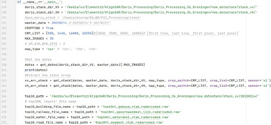
Figure 3.20: Parameters that are to be changed in ‘singnature extraction.py‘
extraction.py‘
After obtaining 14 SAR signatures, an ANN (artificial neural network) is implemented for land use land cover (LULC) classification, see the scripts in the folder ’MLscripts/Netherlands- LULC’. One can directly run main.ipynb under ’data preparation’ folder, after define the proper file directory where the NetCDF data is stored. For our case, as an example,
preparation’ folder, after define the proper file directory where the NetCDF data is stored. For our case, as an example,
we define: path = ’../data/Groningen netcdf
netcdf 20220109
20220109 full
full attributes.nc’ in main.ipynb. ’Groningen
attributes.nc’ in main.ipynb. ’Groningen netcdf
netcdf 20220109
20220109 full
full attributes.nc’ can be downloaded via Link. After all csv files generated, one moves to ’training’ folder, and run main.ipynb (which is in ’training’ folder). The ANN-based LULC classification result is illustrated in [4].
attributes.nc’ can be downloaded via Link. After all csv files generated, one moves to ’training’ folder, and run main.ipynb (which is in ’training’ folder). The ANN-based LULC classification result is illustrated in [4].
As this document is mainly focused on introducing how to create SAR benchmark datasets using AlignSAR package, Section 3.4 is short, and we welcome peers to try out our scripts in ’MLscripts’ and contribute to the script improvement.

Field name SAR usage: Global attributes

processing level SAR data processing level.
level SAR data processing level.

date created The creation date of SAR data.
created The creation date of SAR data.

creator name Creator’s name.
name Creator’s name.

creator email Creator’s contact information.
email Creator’s contact information.

creator url Creator’s webpage.
url Creator’s webpage.

institution Creator’s affiliation.

project Project’s name.

publisher name Publisher’s name.
name Publisher’s name.

publisher email Publisher’s contact information.
email Publisher’s contact information.

publisher url Publisher’s official website.
url Publisher’s official website.

geospatial lat
lat min data spatial coverage, minimum latitude value [deci-
min data spatial coverage, minimum latitude value [deci-
mal degrees].

geospatial lat
lat max data spatial coverage, maximum latitude value [deci-
max data spatial coverage, maximum latitude value [deci-
mal degrees].
geospatial lon
lon min data spatial coverage, minimum longitude value [dec-
min data spatial coverage, minimum longitude value [dec-
imal degrees].
geospatial lon
lon max data spatial coverage, maximum longitude value [dec-
max data spatial coverage, maximum longitude value [dec-

imal degrees].

sar date
date time Center date time of the product, in UTC. sar
time Center date time of the product, in UTC. sar reference
reference date
date time Reference image acquisition time, in UTC. sar
time Reference image acquisition time, in UTC. sar instrument
instrument mode The name of the sensor acquisition mode that is used. sar
mode The name of the sensor acquisition mode that is used. sar looks
looks range Number of range looks, which is the number of groups
range Number of range looks, which is the number of groups

of signal samples (looks) perpendicular to the flight path.

sar looks
looks azimuth Number of azimuth looks, which is the number of
azimuth Number of azimuth looks, which is the number of
groups of signal samples (looks) along the flight path.

sar pixel
pixel spacing
spacing range The range pixel spacing is the distance between adja-
range The range pixel spacing is the distance between adja-
cent pixels perpendicular to the flight path in meters (m).

sar pixel
pixel spacing
spacing azimuth The azimuth pixel spacing is the distance between ad-
azimuth The azimuth pixel spacing is the distance between ad-
jacent pixels parallel to the flight path in meters (m).

sar processing
processing software Software used for InSAR processing. For instance
software Software used for InSAR processing. For instance

”ESA SNAP Toolbox”: ”8.0”, ”SNAPHU”: ”1.4.2”.

sar absolute
absolute orbit Absolute orbit (track) of the input datasets. sar
orbit Absolute orbit (track) of the input datasets. sar relative
relative orbit Relative orbit (track) of the input datasets. sar
orbit Relative orbit (track) of the input datasets. sar view
view azimuth The azimuth angle (heading) of the center of the prod-
azimuth The azimuth angle (heading) of the center of the prod-

uct.

sar viewincidence
viewincidence angle The incidence angle of the center of the product.
angle The incidence angle of the center of the product.

sar slc
slc crop The crop region based on AOI. From left to right are the first line, last line, first pixel, and last pixel.
crop The crop region based on AOI. From left to right are the first line, last line, first pixel, and last pixel.

Table 3.1: Metadata/attributes information
Field name SAR usage: Local attributes unit The unit of the SAR signature. format The format of the SAR signature.


range The value range of the SAR signature.

description The detailed description of the SAR signature.

Table 3.2: Cont. Metadata/attributes information
In this appendix, we introduce the installation of Doris-5, and offer solutions to some installation and implementation errors.
We made updates upon the Doris-5 published by the radar group at the Delft University of Technology on TUDelftGeodesy github. The updated Doris-5 scripts can be found via AlignSAR on github, or Doris-Surfdrive. Note that if you download Doris-5 package via TUDelftGeodesy, be sure that you rename ’Doris-master’ to ’doris’. Because having the hyphen ’-’ in a software directory will introduce errors when invoking Doris-5 python scripts that are under the folder ’Doris-master’. Doris-Surfdrive also provides some Doris- 5-required software packages under the folder ’doris5 required
required software’. As Doris-5 is built upon python2 and only compatible with the old version of the required software packages, we recommend using the packages in ’doris5
software’. As Doris-5 is built upon python2 and only compatible with the old version of the required software packages, we recommend using the packages in ’doris5 required
required software’.
software’.
Here we give an installation demonstration, based on the installation descriptions in INSTALL.txt on TUDelftGeodesy. The operating system we recommend is Ubuntu:18.04.
Installation of FFTW library (fftw-3.2.1 is offline)
In the terminal, create a folder where to install software, e.g. /home/username/software, then run
wget -c http://www.fftw.org/pub/fftw/fftw-3.2.2.tar.gz gunzip fftw-3.2.2.tar.gz
tar xvf fftw-3.2.2.tar cd fftw-3.2.2/
./configure –prefix=‘pwd‘ –enable-float make
make install
Compilation of the doris core run cd ../doris core
core
./configure
Edit ’Makefile’, here is an example:
—————
compiler: g++ fftw: y
FFTW LIB DIR: /home/username/software/fftw-3.2.2/lib
FFTW INCLUDE DIR: /home/username/software/fftw-3.2.2/include veclib: n
lapack: n
Little endian: y DEBUG version: n
Install in dir: /usr/local/bin
—————
(Note that g++ has the version of 7.5.0.)
when running ’make’ in the terminal, you may encounter an error like
—————
bk messages.hh:214:26: error: invalid conversion from ‘char’ to ‘const char*’ [- fpermissive]
messages.hh:214:26: error: invalid conversion from ‘char’ to ‘const char*’ [- fpermissive]
strcat(name ,’\0’); ;// terminate id
,’\0’); ;// terminate id
—————
The solution is to edit ’bk messages.hh’, change its Line 214 strcat(name
messages.hh’, change its Line 214 strcat(name ,’\0’); to name
,’\0’); to name [9] = ’\0’;
[9] = ’\0’;
Then run ’sudo make install’. If ’construct dem.sh’ does not exist in doris/bin, then copy one to ’bin’ folder.
dem.sh’ does not exist in doris/bin, then copy one to ’bin’ folder.
Compilation of Doris utilities cd ../sartools
In ’Makefile’, edit ’INSTALL DIR’, like INSTALL
DIR’, like INSTALL DIR = /usr/local/bin and edit cpxfiddle.cc, change if (argv[optind]==’\0’) to if (*argv[optind]==’\0’)
DIR = /usr/local/bin and edit cpxfiddle.cc, change if (argv[optind]==’\0’) to if (*argv[optind]==’\0’)
then run ’make’ and ’sudo make install’ cd ../envisat tools
tools
In ’Makefile’, change INSTALL DIR = /usr/local/bin, and CC = g++ //[it was gcc]
DIR = /usr/local/bin, and CC = g++ //[it was gcc]
then run ’make’ and ’sudo make install’
Installation of useful external software gfortran: version is 7.5.0
gunzip getorb doris.tar.gz tar xvf getorb
doris.tar.gz tar xvf getorb doris.tar In ’Makefile’: change
doris.tar In ’Makefile’: change
FC = gfortran
Installation of Doris - Python part
Python has the version of 2.7. use pip2 to install Python packages, for instance: sudo pip2 install requests
pip2 install GDAL==2.2.2 pip2 install shapely==1.7.1 sudo pip2 install pygeoif sudo pip2 install lxml
sudo pip install -U pyopenssl
sudo pip install numpy scipy matplotlib requests fiona pyproj fastkml osr
In case you encounter error during GDAL installation, try to install libgdal first and then set up appropriate paths:
sudo apt-get install libgdal-dev
export CPLUS INCLUDE
INCLUDE PATH=/usr/include/gdal export C
PATH=/usr/include/gdal export C INCLUDE
INCLUDE PATH=/usr/include/gdal
PATH=/usr/include/gdal
Here we showcase the Doris-5 implementation.
Create an account
for the downloading of SRTM DEMs at https://urs.earthdata.nasa.gov/users/new,
and create an account for downloading Sentinel data at https://urs.earthdata.nasa.gov/users/new/
Move to the install directory cd ../install
python init cfg.py and fill in the different paths and user accounts. Here is an example:
cfg.py and fill in the different paths and user accounts. Here is an example:
Enter the path to doris: /usr/local/bin/doris
Enter the path to cpxfiddle: /usr/local/bin/cpxfiddle
Enter the path to snaphu: /usr/local/bin/snaphu
Enter your username for scihub (https://scihub.copernicus.eu/dhus/#/self-registration)lchang? Enter your password for scihub ?
Enter your username for srtm download (https://urs.earthdata.nasa.gov/users/new/)Chang? Enter your password for srtm download ?
Doris is initialized. If you want to make changes later, you can change the doris config.xml file in ’install’ folder or run this script again.
config.xml file in ’install’ folder or run this script again.
Run the stack preparation script (Move to the prepare stack directory) cd prepare
stack directory) cd prepare stack
stack
Run the python script:
python prepare datastack
datastack main.py Here is an example:
main.py Here is an example:
Enter the path to the archive data folder: /home/ling/d2/groningendata Which polarisation do you want to use (vv,hh,vh,hv): vv
Which track do you want to work with? (explore on https://scihub.copernicus.eu/dhus/)
: 15
Is this track ascending or descending? (asc/dsc) : asc
Enter the path to the folder of new datastack: /home/ling/d2/groningen/processing Enter full path to the shapefile: /home/ling/d2/groningen/aoi/G1.shp
Enter the path to the folder of the orbit files: /home/ling/d2/groningen orbit Do you want to generate the DEM file automatically (Yes/No): Yes
orbit Do you want to generate the DEM file automatically (Yes/No): Yes
Enter path to the dem folder: /home/ling/d2/groningen/DEM Do you want to use parallel computing (Yes/No): Yes
How many cores do you want to use: 2
What is the start date of your stack in yyyy-mm-dd (can be changed later): 2022- 01-09
What is the end date of your stack in yyyy-mm-dd (can be changed later): 2022-03- 22
What is the master date of your stack in yyyy-mm-dd (can be changed later): 2022- 02-14
Note that track number is the path number of Sentinel-1, and edit ’create dem.py’ and change ’server = http://e4ftl01.cr.usgs.gov’ to ’server = https://e4ftl01.cr.usgs.gov’.
dem.py’ and change ’server = http://e4ftl01.cr.usgs.gov’ to ’server = https://e4ftl01.cr.usgs.gov’.
The doris directory can be edited in ’doris config.xml’ under the folder ’software/doris/install’, like <source
config.xml’ under the folder ’software/doris/install’, like <source path>/home/username/software/doris</source
path>/home/username/software/doris</source path>
path>
In case you encounter error like ImportError: No module named html.parser, sim- ply change ’from html.parser import HTMLParser’ to ’from HTMLParser import HTMLParser’ in create dem.py
dem.py
run bash doris stack.sh
stack.sh
be sure that you edit ’doris main.py’ in ’software/doris/doris
main.py’ in ’software/doris/doris stack/main
stack/main code’ folder, add edit sys.path.append(’/home/username/software/’) and provide the absolute di- rectory of Doris-5 software.
code’ folder, add edit sys.path.append(’/home/username/software/’) and provide the absolute di- rectory of Doris-5 software.
To reduce noise in SAR images, Denoising step is provided. For this step, a number of spatial filtering methods, e.g. filtering methods embedded in SNAP, AI based filtering methods and multi-temporal speckle filtering methods, is included. For instance, the multi-temporal speckle filtering is proposed by [5]. As reviewed by [1], in case of applying this filter on SAR amplitude, for a pixel at position (rg, az), with the amplitude value Ak(rg, az), at the kth acquisition, its resultant amplitude value after the filter, denoted by A˜k(rg, az), can be expressed as,
A˜k(rg, az) = [[Ak(rg, az)]filterspace]filter time = Sk(rg, az)T (rg, az), (B.1)
time = Sk(rg, az)T (rg, az), (B.1)
where the spatial filter output is Sk(rg, az) = [Ak(rg, az)]filter space. The Boxcar filter, Lee-sigma filter [3] and IDAN (Intensity Driven Adaptive Neighborhood) filter [6] are examples of the spatial filter methods. The subscript filter
space. The Boxcar filter, Lee-sigma filter [3] and IDAN (Intensity Driven Adaptive Neighborhood) filter [6] are examples of the spatial filter methods. The subscript filter space and filter
space and filter time indicate the spatial and temporal filter process respectively. The temporal filter output T (rg, az)
time indicate the spatial and temporal filter process respectively. The temporal filter output T (rg, az)
is defined as
X
m+1
T (rg, az) = 1
m + 1
i=1
Ai(rg, az) [Ai(rg, az)]filter  space
space
, (B.2)
where m + 1 is the total number of SAR image acquisitions, Ai(rg, az) represents SAR amplitude at position (rg, az) of ith acquisition, i ∈ [1, m + 1]. Having the spatial filter
output as a divisor in Eq. (B.2), we can normalize the amplitude values. The multi- temporal speckle filtering method is scripted with python, namely ’speckle filt.py’.
filt.py’.
Ling Chang et al. “Extraction and Analysis of Radar Scatterer Attributes for PAZ SAR by Combining Time Series InSAR, PolSAR, and Land Use Measurements”. In: Remote Sensing 15.6 (2023), p. 1571. doi: 10.3390/rs15061571.
Anurag Kulshrestha, Ling Chang, and Alfred Stein. “Radarcoding Reference Data for SAR Training Data Creation in Radar Coordinates”. In: IEEE Geoscience and Remote Sensing Letters 21 (2024). doi: 10.1109/LGRS.2024.3376992.
Jong-Sen Lee et al. “Improved sigma filter for speckle filtering of SAR imagery”. In: IEEE Transactions on Geoscience and Remote Sensing 47.1 (2008), pp. 202–213. doi: 10.1109/TGRS.2008.2002881.
Chang Ling and et al. “AlignSAR: An open-source package of SAR benchmark dataset creation for machine learning applications”. In: 2024 IEEE International Geoscience and Remote Sensing Symposium, IGARSS 2024, accepted. 2024, pp. 1–5. url: https:
//surfdrive.surf.nl/files/index.php/s/yAgIc2QQ84ht3c1.
Shaun Quegan and Jiong Jiong Yu. “Filtering of multichannel SAR images”. In: IEEE Transactions on Geoscience and Remote Sensing 39.11 (2001), pp. 2373–2379. issn: 01962892. doi: 10.1109/36.964973.
Gabriel Vasile et al. “Intensity-driven adaptive-neighborhood technique for polari- metric and interferometric SAR parameters estimation”. In: IEEE Transactions on Geoscience and Remote Sensing 44.6 (2006), pp. 1609–1621. doi: 10.1109/TGRS. 2005.864142.
Chen Yu et al. “Generic Atmospheric Correction Model for Interferometric Synthetic Aperture Radar Observations”. In: Journal of Geophysical Research: Solid Earth
123.10 (2018), pp. 9202–9222. doi: https : / / doi . org / 10 . 1029 / 2017JB015305.
eprint: https://agupubs.onlinelibrary.wiley.com/doi/pdf/10.1029/2017JB015305.
url: https://agupubs.onlinelibrary.wiley.com/doi/abs/10.1029/2017JB015305.